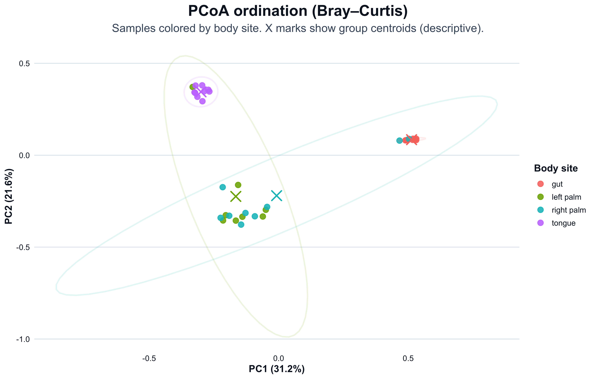

ps <- readRDS("data/moving-pictures-ps.rds")Ordination Plots
Ordination reduces a complex community table into a small number of axes that summarize between-sample dissimilarity.
The goal is not to compress biology into two numbers. The goal is to visualize structure, then interpret it cautiously.
This chapter focuses on:
- Bray–Curtis distance and why it is common
- PCoA ordination and what the axes mean
- how to read clustering and overlap
- how to avoid common interpretation traps
Load data
Transform to relative abundance
Bray–Curtis is commonly applied to relative abundance in exploratory ordination. This does not remove compositional constraints, but it enables clearer comparison across samples.
ps_rel <- phyloseq::transform_sample_counts(ps, function(x) x / sum(x))Compute Bray–Curtis distance
dist_bc <- phyloseq::distance(ps_rel, method = "bray")
# Compact distance overview (avoid printing the full dist object)
n_samples <- phyloseq::nsamples(ps_rel)
n_pairs <- length(dist_bc)
dist_summary <- stats::quantile(
as.numeric(dist_bc),
probs = c(0, 0.25, 0.5, 0.75, 1),
names = TRUE
)
data.frame(
n_samples = n_samples,
n_pairs = n_pairs,
t(round(dist_summary, 4)),
row.names = NULL,
check.names = FALSE
) n_samples n_pairs 0% 25% 50% 75% 100%
1 34 561 0.1357 0.7634 0.9296 0.9944 1# Small preview (first 6 samples)
as.matrix(dist_bc)[1:6, 1:6] L1S105 L1S140 L1S208 L1S257 L1S281 L1S57
L1S105 0.0000000 0.6861838 0.6354987 0.6768454 0.7195914 0.3106120
L1S140 0.6861838 0.0000000 0.3372080 0.4388476 0.3990832 0.7252243
L1S208 0.6354987 0.3372080 0.0000000 0.2702215 0.2594049 0.7422412
L1S257 0.6768454 0.4388476 0.2702215 0.0000000 0.2955335 0.7606517
L1S281 0.7195914 0.3990832 0.2594049 0.2955335 0.0000000 0.7471986
L1S57 0.3106120 0.7252243 0.7422412 0.7606517 0.7471986 0.0000000PCoA ordination
We compute a PCoA (principal coordinates analysis) on the Bray–Curtis distance matrix.
ord <- phyloseq::ordinate(ps_rel, method = "PCoA", distance = dist_bc)
# Coordinates for the first two axes
coords <- as.data.frame(ord$vectors[, 1:2])
colnames(coords) <- c("PC1", "PC2")
# Percent variance explained (if available)
eig <- ord$values$Relative_eig
var_pc1 <- if (!is.null(eig) && length(eig) >= 1) eig[1] * 100 else NA_real_
var_pc2 <- if (!is.null(eig) && length(eig) >= 2) eig[2] * 100 else NA_real_
meta <- data.frame(phyloseq::sample_data(ps_rel))
meta$sample_id <- rownames(meta)
coords$sample_id <- rownames(coords)
ord_df <- merge(coords, meta, by = "sample_id", all.x = TRUE)
# Robust body site column detection
cols <- names(ord_df)
body_col <- intersect(c("body-site", "body.site", "body_site"), cols)
if (length(body_col) == 0) {
stop("Body site column not found in metadata. Available columns: ", paste(cols, collapse = ", "))
}
ord_df$body_site <- ord_df[[body_col[1]]]
# Axis labels with variance (if available)
pc1_label <- if (is.na(var_pc1)) "PC1" else sprintf("PC1 (%.1f%%)", var_pc1)
pc2_label <- if (is.na(var_pc2)) "PC2" else sprintf("PC2 (%.1f%%)", var_pc2)
# Export tables for reproducibility
dir.create("outputs/tables", recursive = TRUE, showWarnings = FALSE)
readr::write_csv(
ord_df[, c("sample_id", "PC1", "PC2", "body_site")],
"outputs/tables/ordination-pcoa.csv"
)
readr::write_csv(
data.frame(PC1 = var_pc1, PC2 = var_pc2),
"outputs/tables/ordination-variance.csv"
)
head(ord_df[, c("sample_id", "PC1", "PC2", "body_site")]) sample_id PC1 PC2 body_site
1 L1S105 0.5304992 0.08234422 gut
2 L1S140 0.5307266 0.08936046 gut
3 L1S208 0.5185157 0.08949133 gut
4 L1S257 0.4958304 0.08236422 gut
5 L1S281 0.4923930 0.08187132 gut
6 L1S57 0.5167373 0.08345351 gutOrdination plot
This plot shows samples in PCoA space, colored by body site.
- Points close together have more similar community composition (under Bray–Curtis).
- Separation can reflect biology, but it can also reflect preprocessing choices or technical structure.
plot_df <- ord_df
plot_df$body_site <- as.factor(plot_df$body_site)
# Centroids for each group (for visual guidance only)
centroids <- dplyr::summarise(
dplyr::group_by(plot_df, body_site),
PC1 = mean(PC1, na.rm = TRUE),
PC2 = mean(PC2, na.rm = TRUE),
n = dplyr::n(),
.groups = "drop"
)
ggplot2::ggplot(plot_df, ggplot2::aes(x = PC1, y = PC2, color = body_site)) +
ggplot2::geom_point(size = 3, alpha = 0.85) +
ggplot2::stat_ellipse(
ggplot2::aes(group = body_site),
type = "norm",
level = 0.95,
linewidth = 0.9,
alpha = 0.15,
show.legend = FALSE
) +
ggplot2::geom_point(
data = centroids,
ggplot2::aes(x = PC1, y = PC2),
shape = 4,
stroke = 1.2,
size = 5,
show.legend = FALSE
) +
ggplot2::labs(
title = "PCoA ordination (Bray–Curtis)",
subtitle = "Samples colored by body site. X marks show group centroids (descriptive).",
x = pc1_label,
y = pc2_label,
color = "Body site"
) +
ggplot2::theme_bw(base_size = 13) +
ggplot2::theme(
plot.title = ggplot2::element_text(hjust = 0.5, face = "bold"),
plot.subtitle = ggplot2::element_text(hjust = 0.5),
panel.grid.minor = ggplot2::element_blank(),
legend.position = "right"
)